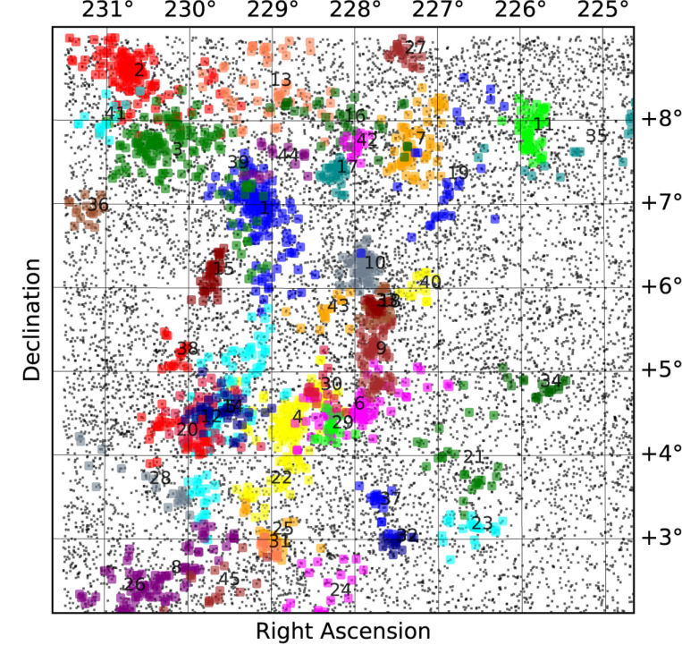
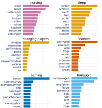
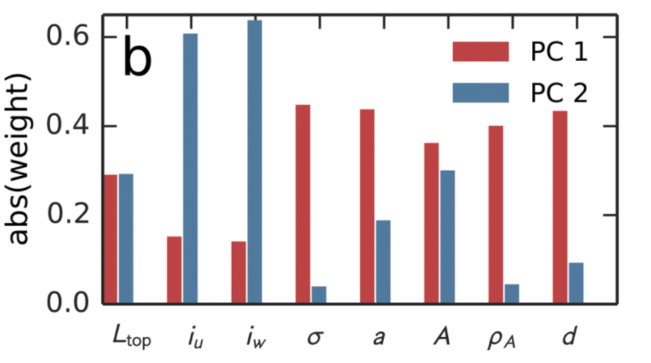

Micro-Degree Artificial Intelligence and Society
– Technical Aspects of AI –
Lecture 3.5: Summary Unsupervised Learning


Astronomy: Detection of Galaxy Clusters
- Question: What is the intrinsic structure of galaxy clusters?
- Approach:
- Grouping of galaxies into galaxy clusters in a given sky region using a hierarchical clustering algorithm.
- Special distance metric (binding energy) that describes connections between galaxies.
- Result: Hierarchical structure (dendrogram) of the galaxy clusters.


Galaxy clusters detected in the sky region near Supercluster A2029. Source: Yu & Hou, Hierarchical clustering in astronomy, Astronomy and Computing (2022).
Sociology: Problems of Young Mothers
- Question: Which topics particularly concern young mothers?
- Approach:
- Identification of relevant public groups on Facebook using keywords and experts.
- Collection of 840,000 posts.
- Identification of topics using text categorization (Topic Modeling).
- Result: well-separated and interpretable topics.
- Use: by the Association for the Promotion of Child Protection and Child Health in Austria for the development of a new information brochure.

Topics discussed by young mothers in public German language Facebook groups.
Project work by Magdalena Fritz.
Project work by Magdalena Fritz.
Biology: Characteristics of Plant Leaves
- Question: Can we use information from the transport networks of plant leaves to distinguish different species?
- Approach:
- Extraction of transport networks and measurement of network characteristics (topology) and geometric characteristics.
- Clustering of plant leaves based on characteristics & dimensionality reduction.
- Results:
- The network structure contains information not found in the geometric structure.
- The PCA clearly shows that geometry and topology cover different dimensions.



Source: Ronellenfitsch et al., Topological Phenotypes Constitute a New Dimension in the Phenotypic Space of Leaf Venation Networks, PLoS Comp. Biol. (2015).
Summary Unsupervised learning
- General aim: discovering unknown patterns in data.
- Three main applications: cluster analysis, dimensionality reduction, association between observations (covered later) .
- Cluster analysis (finding patterns in the observations):
- Aim: find groups of related observations.
- Distance and similarity measures to characterize relatedness.
- Algorithms: hierarchical clustering, K-means, density-based clustering (not covered).
- Clustering properties: exclusiveness, completeness, fuzziness, density- vs. distance-based.
- Dimensionality reduction (finding patterns in the features):
- Problems with too many features: storage requirements, curse of dimensionality
- Aim: reduce number of features without losing too much information.
- Principal Component Analysis: recombination of existing features to concentrate variance into only a few dimensions.